About
I'm an AI engineer working in medicine. I spent two years building clinical imaging models for CT, ultrasound, endoscopy and radiography, then moved to wearable biosignals. Today I work on LLM systems for health: retrieval over medical knowledge, health-aware recommendation, and agents that keep a human in the loop. I'm doing an MSc in Biomedical Engineering at the University of Oulu.
- Computer vision2021–23
- Medical imaging2024–25
- Biosignals2025–26
- LLMs for health2026–now
- 3rd place JunctionX Oulu 2026
- 4 papers in medical AI and robotics
- 1 AI patent pending
- 94.7% stress detection accuracy
Projects
LLMs, agents and sensing for health
-
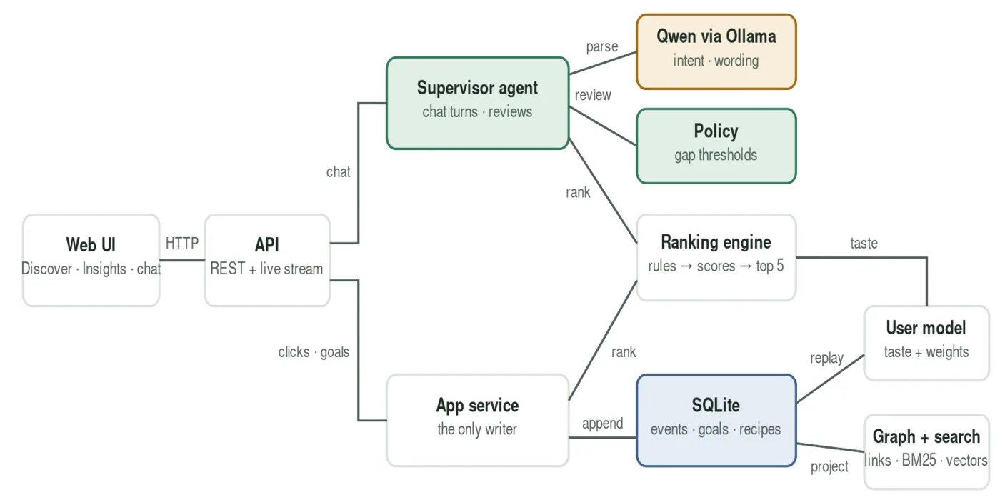
FoodRec: health-aware recipe recommendation
Ranks 9,605 recipes by healthiness, sustainability and convenience, and explains every score. A supervisor agent notices when a user's choices drift from their stated goals and asks before changing anything. Tuned with a 300-run study using simulated users.
-
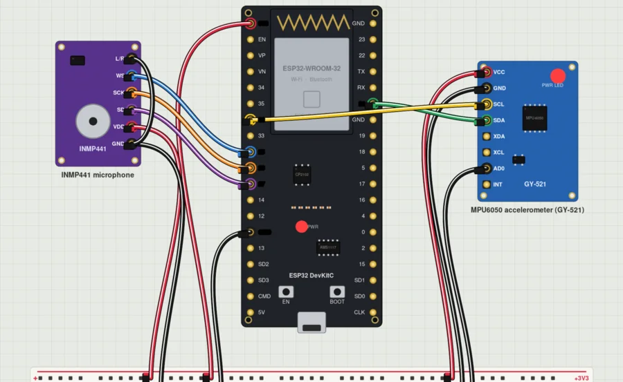
Edge AI Stress Sense: voice-triggered stress measurement
Say a command and two wireless boards (ESP32, ESP8266) stream pulse and skin-conductance data to a WESAD-trained model. It reaches 94.7% accuracy in leave-one-subject-out tests, compared with 88.3% for the WESAD paper's wrist sensors.
-
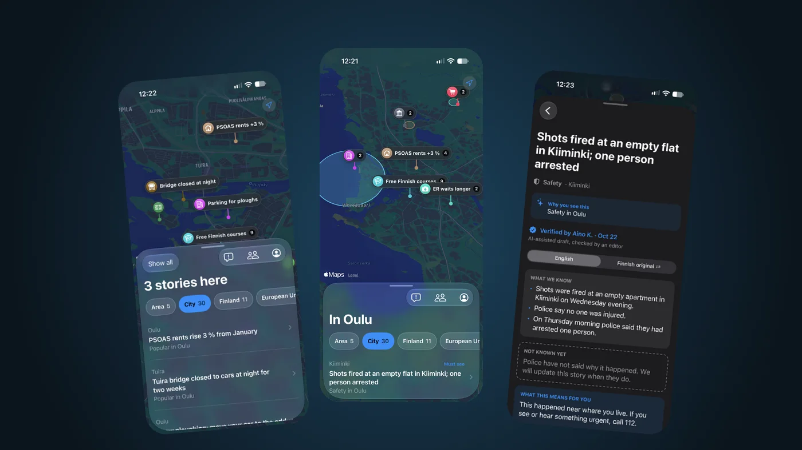
🏆 3rd place · JunctionX Oulu 2026
Pinni: discover local news on a map
An app that puts all of Oulu's news on one map: zoom from your street out to the world. Stories are ranked for each reader, explained in their language and checked by a human editor. I built the agent pipeline: an MCP server with 10 tools, classification, translation into 4 languages and hybrid search.
-
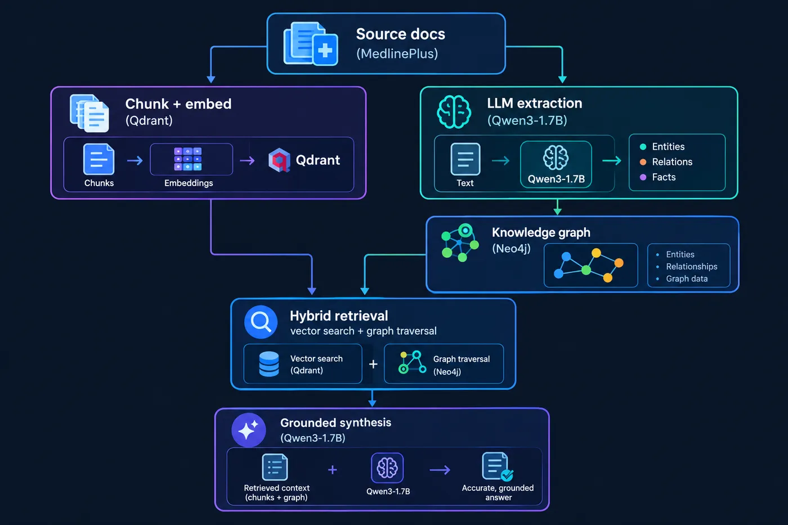
MultiHopRAG: medical Q&A with a knowledge graph
Combines a knowledge graph with vector search to answer medical questions whose answers span several articles. Built on MedlinePlus and runs fully locally with Qwen3-1.7B, Qdrant and Neo4j.
Medical imaging at SIMUT · 2024–2025
-
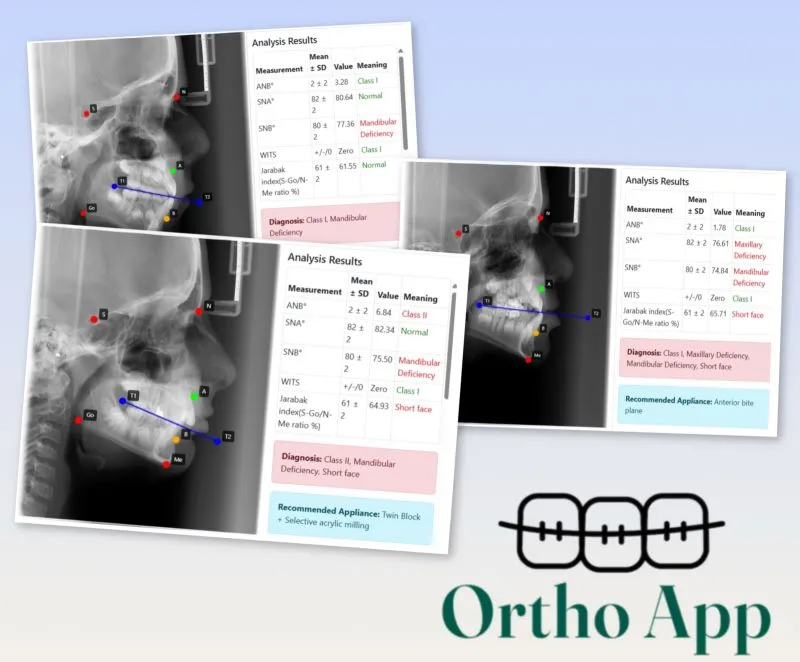
Cephalometric landmark detection
Vision Transformer for orthodontic treatment planning in children. Patent pending; paper under review.
-
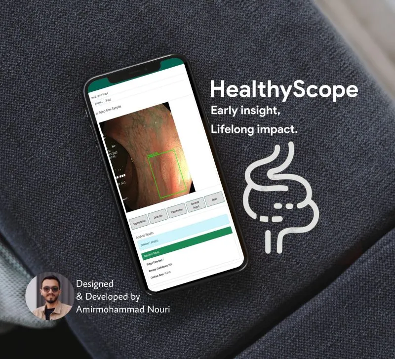
HealthyScope: colonoscopy AI
Polyp detection, segmentation and classification for early colorectal cancer prevention.
-
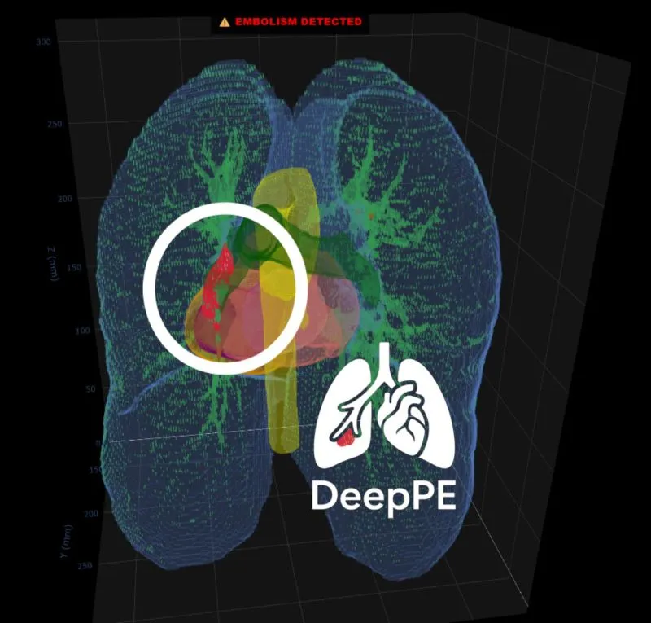
Pulmonary embolism segmentation
U-Net and MONAI pipeline for emboli in CT angiography.
-
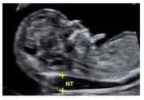
Fetal ultrasound biometry
YOLOv8 measurement of head circumference and nuchal translucency. Paper under review.
-
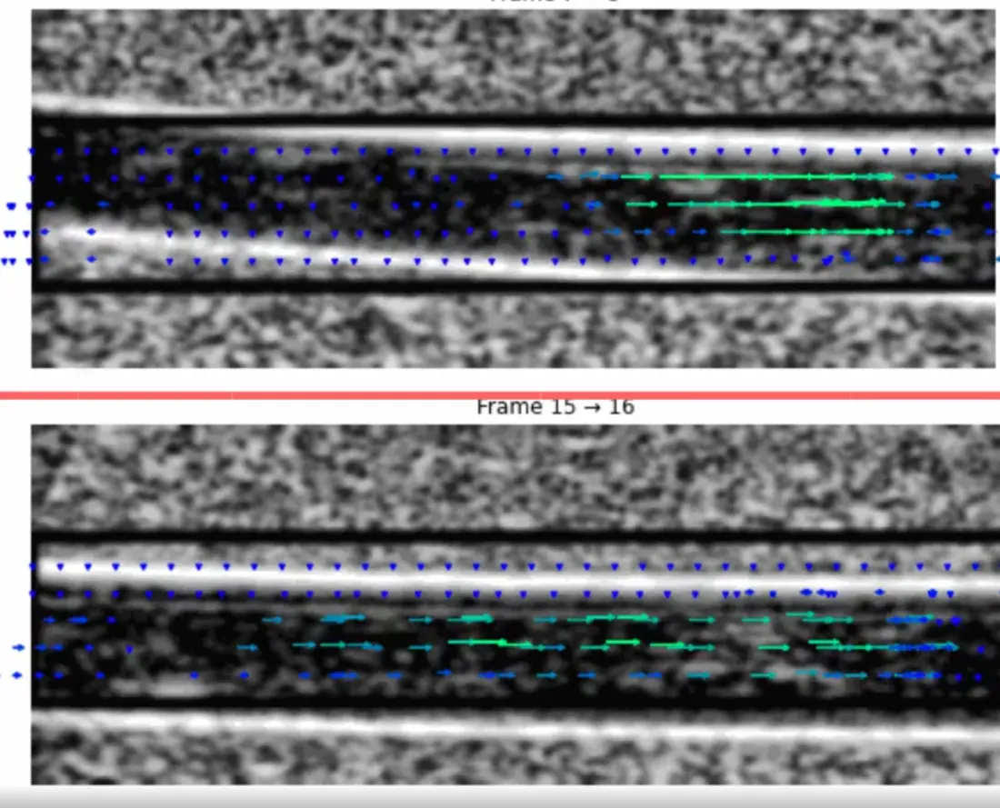
Echocardiography: blood flow and strain
Vector flow imaging and speckle tracking for cardiac function.
Experience
-
Mar – Sep 2026
AI Engineer · Moj Co.
Enterprise-level LLM and RAG systems: retrieval pipelines and LLM applications built on company knowledge.
-
Dec 2025 – Mar 2026
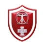
AI & Software Engineer · Vitruvian Shield
Real-time ECG, PPG and motion pipeline for physiological state estimation and anomaly detection on wearables.
-
Jan 2024 – Dec 2025
AI Engineer, Medical Image Analysis · SIMUT
Built and validated clinical AI for radiography, colonoscopy, CT and ultrasound, from research to deployment.
-
2021 – 2023
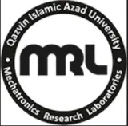
Research Assistant · Mechatronics Research Lab
Vision-based control, detection and SLAM for drones. Won the International UAV Robot League twice; RoboCup 2023.
Publications
-
2025
ViT-based Lateral Cephalometric Radiography Processing for Treatment Planning with Removable Orthodontic Appliances in Children
Nouri, A., Rajaei, I., et al. · Orthodontics & Craniofacial Research · under review
-
2025
A YOLOv8 Deep Learning Model to Measure Nuchal Translucency in First-Trimester Ultrasound Screening
Nouri, A., Arefi, S., et al. · Int. J. Imaging Systems and Technology · under review
-
2025
Automated AI-Driven Measurement of Kidney Length in Ultrasound Images
Amini, L., Ghelich, M., …, Nouri, A., et al. · Scientific Reports · preprint
-
2024
A Vision-Based Approach for Quadrotor Line Following with Sliding Mode Controller
Hazareh, G., …, Nouri, A., et al. · IEEE ICAIR 2024
Education
MSc Biomedical Engineering
University of Oulu · 2026–2028
BSc Biomedical Engineering
Qazvin Islamic Azad University · 2021–2024 · GPA 3.8/4.0
Awards & patents
3rd place, JunctionX Oulu 2026 (Pinni)
1st place, International UAV Robot League, 2022 & 2023
Patent pending: ML cephalometric system · 2 registered patents